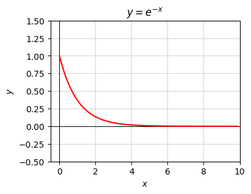

import numpy as np
import sympy as sp
import matplotlib.pyplot as plt
from utils.math_ml import *
plt.rcParams["figure.figsize"] = (4, 3)4 Basic Calculus
In this lesson, I’ll cover the basics of the calculus of a single variable. Calculus is essentially the study of the continuum. Important things that calculus seeks to understand are: - Infinitesimals: How to manipulate numbers that are “infinitely” small. - Limits: What happens when numbers get arbitrarily close to each other. - Differentiation: How one variable changes continuously in response to one or more other variables. - Integration: How to add up infinitely many small numbers to get a finite number.
Not all of these topics are equally important to know for machine learning, but I’ll try to at least touch on each topic a little bit. Let’s get started.
import warnings
warnings.filterwarnings('ignore')Infinitesimals
Fundamental to the understanding of calculus is the idea of an “infinitely small” number, called an infinitesimal. An infinitesimal is a number that’s not 0 but so close to being 0 that you can’t really tell it isn’t 0. These small numbers are often written in math with letters like \(\varepsilon\) or \(\delta\). Think of them as very very tiny numbers, so tiny their square is basically 0: \[\varepsilon > 0, \quad \varepsilon^2 \approx 0.\]
But what does this even mean? Here it might be helpful to recall our discussion of floating point numbers. Recall that we can’t get infinite precision. In python’s double precision floating point we can only get down to about \(5 \cdot 10^{-324}\), or 5e-324. If the square of a small number has a value smaller than about 5e-324 we’d literally get 0.0 as far as python is concerned.
Just for fun let’s look at the really tiny number \(10^{-300}\), or 1e-300. That’s 300 decimal places of zeros before the 1 even shows up. Python thinks 1e-300 is just fine. But what happens if we square it? We should in theory get \(10^{-600}\), or 600 decimal places of zeros followed by a 1. But as far as floating point is concerned, the square is zero.
epsilon = np.float64(1e-300)
epsilon, epsilon ** 2(1e-300, 0.0)Of course, you could argue that we could just go to a higher precision then. Use more bits. But eventually, if we keep making \(\varepsilon\) small enough we’ll hit a point where \(\varepsilon^2 = 0\). Thus, if it makes you feel better, when you see an infinitesimal just think “\(10^{-300}\) in double precision”.
Aside: If you want to be really pedantic, you might say that it shouldn’t matter what a computer does, since any positive number \(\varepsilon\) squared must still be greater than zero, no matter how small \(\varepsilon\) is. This is true for real numbers \(\mathbb{R}\). But it turns out infinitesimals aren’t real numbers at all. They lie in an extension of the real number line called the hyperreal numbers, denoted \(\mathbb{R}^*\). In my opinion, this isn’t an important distinction to worry about in applied calculus.
Similar to infinitesimals being numbers that can be really, really small, we can also talk about numbers being really, really big. These are called infinitely large numbers. In analogy to infinitesimals, infinitely large numbers are positive numbers \(N\) whose square is basically infinite,
\[N > 0, \quad N^2 \approx \infty.\]
We can get infinitely large numbers by inverting infinitesimals, and vice versa,
\[N = \frac{1}{\varepsilon}, \quad \varepsilon = \frac{1}{N}.\]
If \(10^{-300}\) is a good rule of thumb for an infinitesimal, then \(10^{300}\) is a good rule of thumb for an infinitely large number.
N = np.float64(1e300)
N, N ** 2(1e+300, inf)Infinitesimals are especially interesting when added to regular numbers. These are called first order perturbations. For example, consider some finite number \(x\). It could be \(2\) or \(-100\) or whatever you want. Suppose now we add to it an infinitesimal number \(\varepsilon\). Now suppose we have an output \(y\) that depends on \(x\) through a function \(y=f(x)=x^2\). What happens to \(y\) if we perturb \(x\) to \(x+\varepsilon\)? That is, what is \(f(x + \varepsilon)=(x+\varepsilon)^2\)? Expanding the square, we have
\[f(x + \varepsilon) = (x + \varepsilon)^2 = x^2 + 2x\varepsilon + \varepsilon^2.\]
But since \(\varepsilon^2 \approx 0\),
\[f(x + \varepsilon) = (x + \varepsilon)^2 \approx x^2 + 2x\varepsilon.\]
Okay, but what does this mean? Well, I can reformulate the question as follows: “If I change \(x\) by a little bit, how much does the function \(y\) change”? Call this change \(\delta\), the change in \(y\) due to \(x\) getting changed by \(\varepsilon\). Since \(\delta = f(x+\varepsilon) - f(x)\) by definition, we’d have
\[\delta = f(x+\varepsilon) - f(x) = (x+\varepsilon)^2 - x^2 \approx 2x\varepsilon.\]
That is, if we change \(x\) by a small amount \(\varepsilon\), then \(y\) itself changes by a small amount \(\delta=2x\varepsilon\). Interestingly, how much \(y\) changes actually depends on which \(x\) we pick. If \(x=1\) then \(y\) changes by \(2\varepsilon\), just twice how much \(x\) is nudged. If \(x=1000\) though, then \(y\) changes by \(2000\varepsilon\), a much bigger change, but still infinitesimal. After all, \(2000 \cdot 10^{-300} = 2 \cdot 10^{-297}\) is still really, really small.
Limits
One application of infinitesimals is to look at the nearby behavior of a function around some point. Suppose we have some function \(y=f(x)\). We’d like to look at the nearby behavior of the function around some point \(x=x_0\). By that, I don’t mean, what is \(f(x_0)\), I mean what is \(f(x)\) when \(x\) is infinitesimally close to \(x_0\).
Consider a first order perturbation \(x = x_0+\varepsilon\) sending \(f(x_0)\) to \(f(x_0+\varepsilon)\). Imagine making \(\varepsilon\) smaller and smaller until it’s infinitesimal. If \(y=f(x_0+\varepsilon)\) gets closer and closer to some value \(L\), we call \(L\) the limit as \(x\) approaches \(x_0\), and write
\[L = \lim_{x \rightarrow x_0} f(x).\]
More formally, say \(L\) is the limit if the difference \(|f(x_0+\varepsilon)-L|\) is infinitesimal whenever \(\varepsilon\) is too. Another notation for the limit is
\[y \rightarrow L \text{ as } x \rightarrow x_0.\]
This all seems kind of pedantic if you think about it. It seems like we’re doing a bunch of extra work just to evaluate the function at \(x_0\) to finally get \(L=f(x_0)\)? In most cases in practice this is true, but not always.
A classic example is a function with a hole in it. Suppose we have a function \(y=f(x)\) like this
\[ y = \begin{cases} 1 & x = 0, \\ x^2 & x \neq 0. \end{cases} \]
Here’s what it looks like. It’s just a parabola \(y=x^2\), but with a hole at \(x=0\) since \(f(0)=1\neq 0^2\).
x = np.arange(-2, 2, 0.01)
f_neq_0 = lambda x: x ** 2
plt.plot(x, f_neq_0(x), color='red', zorder=0)
plt.scatter(0, 1, color='red', marker='o', s=20, zorder=1)
plt.scatter(0, 0, c='white', edgecolors='red', marker='o', s=20, zorder=2)
plt.grid(True, alpha=0.5)
plt.xlabel('x')
plt.ylabel('y')
plt.title('$y = 1$ if $x = 0$ else $x^2$')
plt.show()
Suppose we make a first order perturbation to this function about \(x_0=0\) by a small positive number \(\varepsilon > 0\). Then
\[f(x_0+\varepsilon) = f(0 + \varepsilon) = f(\varepsilon) = \varepsilon^2.\]
If we now allow \(\varepsilon \rightarrow 0\), then clearly \(\varepsilon^2 \rightarrow 0\), so
\[L = \lim_{x \rightarrow 0} f(x) = 0 \neq f(0) = 1.\]
This is just a long drawn-out way of saying that the limit is what the function would be if it didn’t have a hole in it at \(x_0=0\). If the above function didn’t have a hole in it, then \(f(0)\) would be \(L=0\).
A function that is well-behaved in this sense that it has no holes or jumps is called continuous. Continuous functions satisfy the very nice property that the limit can be pulled inside the function,
\[\lim_{x \rightarrow x_0} f(x) = f\bigg(\lim_{x \rightarrow x_0} x\bigg) = f(x_0).\]
Since almost every function we work with in practice is continuous, we can by and large take for granted that we can do this, keeping in mind that exceptions do occur and you sometimes have to be careful.
In my experience, the only real place limits seem to come up in machine learning is the infinite limit case when \(x \rightarrow \infty\),
\[\lim_{x \rightarrow \infty} f(x).\]
The easiest way to figure these limits out is to plug in a large value for \(x\) and see what \(f(x)\) is tending towards. For example, here’s a demonstration that
\[\lim_{x \rightarrow \infty} e^{-x} = 0.\]
You can see that \(e^{-x}\) is pretty much \(0\) by the time \(x=20\), which suggests the limit is \(0\) as \(x \rightarrow \infty\). While this isn’t a “proof”, it should be pretty convincing.
for x in np.exp(range(6)):
y = np.exp(-x)
print(f'x = {x.round(2)} \t y = {y.round(8)}')x = 1.0 y = 0.36787944
x = 2.72 y = 0.06598804
x = 7.39 y = 0.00061798
x = 20.09 y = 0.0
x = 54.6 y = 0.0
x = 148.41 y = 0.0If you like, you can also use sympy to evaluate the infinite limit symbolically.
x = sp.symbols('x')
y = sp.exp(-x)
sp.limit(y, x, sp.oo)\(\displaystyle 0\)
Generally speaking, each additive term in a function will go like its most dominating component as \(x \rightarrow \infty\). For example, take the continuous function \(y=x e^{-x} + 1\). The first term \(xe^{-x}\) is dominated by \(e^{-x}\) when \(x\) is large, since it shrinks to \(0\) much faster than \(x\) increases. Since the other term just stays at \(1\), we get
\[\lim_{x \rightarrow \infty} (x e^{-x} + 1) = 0 + 1 = 1.\]
When \(x\) gets large, the following rule of thumb holds for different classes of functions, with functions to the left dominating functions to the right,
\[\text{factorials} >> \text{exponents} >> \text{polynomials} >> \text{logarithms} >> \text{constants}.\]
If you’ll recall, this exact same chain was shown when I talked about asymptotic notation. In fact, we can use infinite limits to formally define what big-oh notation means. Say a function \(f(x)\) is \(O(g(x))\) if
\[\lim_{n \rightarrow \infty} \bigg|\frac{f(n)}{g(n)}\bigg| \leq M\]
for some finite constant \(M > 0\). For example, the function \(f(n) = n^3 + 2n^2 - 5n\) is \(O(n^3)\) since
\[\lim_{n \rightarrow \infty} \bigg|\frac{n^3 + 2n^2 - 5n}{n^3}\bigg| = \lim_{n \rightarrow \infty} \bigg(1 + \frac{2}{n} - \frac{5}{n^2}\bigg) = 1 \leq 1.\]
Differentiation
Derivatives
Let’s go back to our example before where we looked at first order perturbations to the function \(y=x^2\). We showed if \(x\) is infinitesimally changed to \(x + \varepsilon\), then \(y\) is changed to \(y + \delta \approx 2x\varepsilon\).
When we talk about changing \(x\) by a little bit and asking how \(y\) changes we use a cleaner notation. Instead of writing \(x + \varepsilon\), we’d write \(x + dx\). Instead of writing \(y + \delta\), we’d write \(y + dy\). These values \(dx\) and \(dy\) are called differentials.
They’re just infinitesimals like I defined them before, but this differential notation makes it clear what is a small change of what. Writing \(dx\) means “a little bit of \(x\)”. Writing \(dy\) means “a little bit of \(y\)”. This is where the term “differentiation” comes from.
In the language of differentials, we want to ask what happens to \(y+dy\) in response to perturbations \(x+dx\). In our running example, this is
\[y + dy = f(x+dx) = (x + dx)^2 = x^2 + 2xdx + dx^2 \approx x^2 + 2xdx,\]
with the approximate equality becoming exact when \(dx\) is infinitesimal.
Let’s solve for \(dy\), how much \(y\) changes in response to \(x\) changing a little bit. Subtracting both sides by \(y=x^2\) just gives \(dy = 2xdx\). If we then divide both sides by \(dx\) we get \[\frac{dy}{dx} = 2x.\]
This ratio of differentials \(\frac{dy}{dx}\) is called the derivative of the function \(y=x^2\), usually just pronounced “dydx”. The act of taking a derivative is called differentiation. Notice there’s no infinitesimal (\(dy\) or \(dx\)) on the right-hand side, hence the derivative is not itself an infinitesimal. It’s finite.
Notice that the derivative is a function since it maps inputs \(x\) to outputs \(\frac{dy}{dx}=2x\). To indicate this functional relationship people sometimes write either
\[\frac{dy}{dx}=\frac{d}{dx}f(x) \quad \text{ or } \quad \frac{dy}{dx}=f'(x)\] to make this clear.
Let’s use python to try to calculate what the derivative of \(y=x^2\) is for a specific value of \(x\), say \(x=1\). We can do this by taking smaller and smaller values of \(dx\) and looking at the ratio \[\frac{dy}{dx}\bigg|_{x=1} = \frac{(x+dx)^2 - x^2}{dx}\] for different choices of \(dx\).
Notation: Read the left-hand side of this expression as “the derivative evaluated at \(x=1\)”. Another way to write the same thing is \(f'(1)\) or \(\frac{d}{dx}f(1)\).
I’ll define a loop over some values of \(dx\) and see what the predicted derivative is. Since the exact derivative function is \(2x\), the exact answer at \(x=1\) should be \[\frac{dy}{dx}\bigg|_{x=1} = 2 \cdot 1 = 2.\]
I’ll also print out the error, which is the predicted value \(2\) minus the calculated value. Smaller error is better, obviously.
f = lambda x: x ** 2
x0 = 1
dydx_exact = 2 * x0
for dx in [1, 0.1, 0.01, 0.001, 1e-4, 1e-5, 1e-10, 1e-100, 1e-200]:
dydx = (f(x0 + dx) - f(x0)) / dx
error = dydx - dydx_exact
print(f'dx = {dx:8.16f} \t dy/dx = {dydx:4f} \t error = {error:4f}')dx = 1.0000000000000000 dy/dx = 3.000000 error = 1.000000
dx = 0.1000000000000000 dy/dx = 2.100000 error = 0.100000
dx = 0.0100000000000000 dy/dx = 2.010000 error = 0.010000
dx = 0.0010000000000000 dy/dx = 2.001000 error = 0.001000
dx = 0.0001000000000000 dy/dx = 2.000100 error = 0.000100
dx = 0.0000100000000000 dy/dx = 2.000010 error = 0.000010
dx = 0.0000000001000000 dy/dx = 2.000000 error = 0.000000
dx = 0.0000000000000000 dy/dx = 0.000000 error = -2.000000
dx = 0.0000000000000000 dy/dx = 0.000000 error = -2.000000Starting with \(dx=1\) is a bad choice, with a huge error of \(1.0\). We’re way off. Shrinking to \(dx=0.1\) puts us in the ball park with a value \(\frac{dy}{dx}=2.1\). You can see that making \(dx\) successively smaller and smaller makes the error successively smaller, in this case by a factor of 10 each time.
The error is getting smaller all the way down to about \(dx=10^{-10}\) before creeping up again as we make \(dx\) even smaller than that. This is due to the numerical roundoff of floating point numbers. We’re subtracting two numbers \(f(x_0+dx) - f(x_0) = (1+dx)^2 - 1\) that are very close to each other when \(dx\) is really small, which as you’ll recall is one of the pitfalls to avoid when working with floating point numbers.
This method we just used to calculate the derivative is essentially exactly how derivatives are usually calculated on a computer. The process of calculating the derivative this way, directly from its definition essentially, is called numerical differentiation. We choose a small value of \(dx\) and just apply the formula above, with some minor tweaks to get better accuracy in fewer steps. It’s common in practice to choose “less small” values for \(dx\) when calculating derivatives numerically like this, e.g. 1e-5.
We can talk about any reasonably well-behaved function \(f(x)\) having a derivative. If \(y=f(x)\) and we make a first order perturbation \(x+dx\), then \(y\) gets perturbed by \(y+dy=f(x+dx)\). The amount \(y=f(x)\) changes per amount \(dx\) is then the derivative
\[\frac{dy}{dx} = \frac{f(x+dx)-f(x)}{dx}.\]
This definition is only exact when \(dx\) is infinitesimal. For finite values of \(dx\) (like what we’d code up on a computer) this equality is only approximately true.
What do I mean when I say the function \(f(x)\) needs to be reasonably well behaved? For one thing, the function needs to be continuous. Informally, you can think of a univariate function as being continuous if you can draw its graph on a piece of paper without lifting your pen. There are no jumps or holes anywhere in the functions’ curve. More formally, a function is continuous at \(x_0\) if \(f(x) \rightarrow f(x_0)\) as \(x \rightarrow x_0\). That is, all the limits are what they should be. There are no holes or jumps in the graph.
Continuity is just one condition necessary for \(f(x)\) to be differentiable. It also can’t be too jagged in some sense. Derivatives don’t make sense at points where there are kinks in the function curve. At points where there are kinks we have to use a slightly different kind of derivative called a subderivative.
Since derivatives are functions we can take the derivative of the derivative too, \(\frac{d}{dx} \frac{dy}{dx}\), which turns out to be
\[\frac{d^2 y}{dx^2} = \frac{d}{dx} \frac{dy}{dx} = \frac{d}{dx} \frac{f(x+dx)-f(x)}{dx} = \frac{f(x+2dx) - 2f(x+dx) + f(x)}{dx^2}.\]
This is called a second derivative, and sometimes also written \(f'(x)\) or \(\frac{d^2}{dx^2} f(x)\).
As a quick example, the second derivative of our running function \(y=x^2\) is the first derivative of \(2x\), which is
\[\frac{d^2 y}{dx^2} = \frac{2(x + dx) - 2x}{dx} = 2.\]
Higher-order derivatives can be defined as well by continuing to take derivatives of the second derivative, like third derivatives of fourth derivatives. These show up less prominently though, and as such aren’t discussed all that much.
Visualizing Derivatives
The first derivative \(\frac{dy}{dx}\) has an interesting and useful geometric interpretation as the slope of the curve \(y=f(x)\) at the point \(x\). To see this, imagine a right triangle with length \(dx\) and height \(dy\). The slope, or “steepness”, of its hypotenuse is just the ratio height over width, i.e. \(\frac{dy}{dx}\).
plot_right_triangle()
We can use this idea to talk about the slope of a function at a point. If \(y=f(x)\) is a function, then the derivative \(\frac{dy}{dx}\) at some point \(x=x_0\) is the slope of that function at the point \((x_0,y_0)\). It’s the slope of the line that hugs the point \((x_0,y_0)\) tangent to the curve. This “hugging line” is called the tangent line. We can pretty easily solve for what this line has to be. It must run through \((x_0,y_0)\) and have slope \(m=\frac{d}{dx}f(x_0)\), so writing \(y=mx+b\) and solving for the intercept \(b\) would give the first order perturbation
\[y = y_0 + \frac{d}{dx}f(x_0)(x - x_0).\]
Here’s an example. I’ll plot the function \(y=x^2\) and its tangent at a point \(x_0=2\) on the x-axis. The corresponding \(y\) at \(x=2\) is just \(y_0=x_0^2=4\). As we derived above, its derivative (and hence slope) at \(x_0=2\) is
\[\frac{d}{dx}f(2)=2(2)=4,\]
so the equation for the tangent line of \(y=x^2\) at \(x_0=2\) is
\[y = 4 + 4(x - 2) = 4x -4.\]
The code below implements this calculation. I’ll define the function f that gives y = f(x) along with the derivative dydx = dfdx(x), and then use these two define a function f_line to calculate the tangent line, which also depends on a specified point x0.
Feel free to adjust the value of x0 observe how the slope changes with the value you pick. In all cases, the line should hug the curve of the function and stay tangent to it.
f = lambda x: x ** 2
dfdx = lambda x: 2 * x
x0 = 2
x = np.arange(-3 * x0, 3 * x0, 0.1)
f_line = lambda x: f(x0) + dfdx(x0) * (x - x0)
plot_tangent_curve(x, x0, f, f_line, xlim=(-5, 5), ylim=(0, 10),
title=f'Tangent Line of $y=x^2$ at ${(x0, f(x0))}$')Generally speaking, if the derivative \(\frac{dy}{dx}\) at a point is positive the tangent line will slant towards the right. If the derivative at that point is negative the tangent line will slant towards the left. If it’s zero, the tangent line there will be horizontal.
The second derivative \(\frac{d^2 y}{dx^2}\) has a geometric interpretation as well. It captures information about the curvature of the function. To see why this is true we need to look at second order perturbations. That is, we need to add in a term to the tangent line equation of order \((x-x_0)^2\),
\[y = f(x_0) + \frac{d}{dx}f(x_0) (x-x_0) + \color{red}{\frac{1}{2}\frac{d^2}{dx^2}f(x_0) (x-x_0)^2}.\]
What may seem weird is the \(\frac{1}{2}\) out front of the red second-order term. This has to do with how Taylor series work, a topic I don’t see a need to cover at the moment. What’s important though is the term is quadratic, and it depends on the second derivative at \(x=x_0\).
A second order perturbation defines a tangent parabola given by a quadratic function \(y=ax^2+bx+c\), where \(a,b,c\) are coefficients determined by the values of the inputs \(f(x_0), \frac{d}{dx}f(x_0), \frac{d^2}{dx^2}f(x_0)\). Most importantly, the leading coefficient \(a\) is just the second derivative at \(x=x_0\), i.e. \(a = \frac{d^2}{dx^2}f(x_0)\).
Since \(a\) determines the shape of the tangent parabola, it also determines the curvature of the function at \(x=x_0\). If \(a\) is large at \(x=x_0\), the function will be sharply curved around that point. If \(a\) is small, the function will be very flat around \(x=x_0\). The sign of \(a\) will indicate whether the function is curved upward or downward. If \(a>0\) the function will be curved upward. If \(a < 0\) it’ll curve downward.
In our example \(y=x^2\), since \(a=\frac{d^2 y}{dx^2} = 2 > 0\), meaning the tangent parabola is just the function \(y=x^2\) itself. Of course it is. Since \(a\) is constant, the curvature for the parabola is the same everywhere.
Since \(a=2>0\), the function \(y=x^2\) “bowls upward” everywhere. Functions that “bowl upward” everywhere like this are called convex function. If instead \(a < 0\) everywhere, e.g. like it would be for \(y=-x^2\), the function would “bowl downward” everywhere. These are called convave functions. Convex (and concave) functions are very important for machine learning and optimization more generally since they’re guaranteed to have a unique global minimum (or maximum). More on this in a future lesson.
Here’s a more general example where the second derivative isn’t constant, \(y = \sin x\). In this case, \(\frac{dy}{dx} = \cos x\) and \(\frac{d^2y}{dx^2} = -\sin x\). Suppose we want to get the tangent parabola at the point \(x_0=-\frac{\pi}{2}\), so \(f(x_0)=-1\), \(\frac{d}{dx}f(x_0)=0\) and \(\frac{d^2}{dx^2}f(x_0)=1\). Then the tangent parabola is given by the equation
\[y = -1 + 0 \cdot \bigg(x + \frac{\pi}{2}\bigg) + \bigg(x + \frac{\pi}{2}\bigg)^2.\]
This is an upward-sloping parabola with vertex at \(\big(\frac{\pi}{2}, -1\big)\). Here’s a plot of this idea using the same helper function, but passing in f_parabola instead of f_tangent. Notice how the parabola approximates the function pretty well around the point \(\big(\frac{\pi}{2}, -1\big)\), but gets less and less accurate as we get away from that point. The fact that \(a=1\) here says that we should expect an upward sloping parabola with “unit curvature”, which is what we see.
f = lambda x: np.sin(x)
dfdx = lambda x: np.cos(x)
d2fdx2 = lambda x: -np.sin(x)
x0 = -np.pi / 2
x = np.arange(-5, 5, 0.1)
f_parabola = lambda x: f(x0) + dfdx(x0) * (x - x0) + 1/2 * d2fdx2(x0) * (x - x0) ** 2
plot_tangent_curve(x, x0, f, f_parabola, xlim=(-5, 5), ylim=(-1.5, 1.5),
title=f'Tangent Parabola of $y=\sin x$ at $(\pi/2, -1)$')Differentiation Rules
As we’ve seen, derivatives are also functions in and of themselves, mapping inputs to outputs via \(\frac{dy}{dx} = \frac{d}{dx}f(x)\). For this reason, several rules exist relating derivatives to their original functions.
Here are the derivatives of some common functions that come up:
| Function | Derivative |
|---|---|
| \(\frac{d}{dx}1\) | \(0\) |
| \(\frac{d}{dx}0\) | \(0\) |
| \(\frac{d}{dx}x\) | \(1\) |
| \(\frac{d}{dx}x^2\) | \(2x\) |
| \(\frac{d}{dx}\sqrt{x}\) | \(\frac{1}{2\sqrt{x}}\) |
| \(\frac{d}{dx}\frac{1}{x}\) | \(-\frac{1}{x^2}\) |
| \(\frac{d}{dx}e^x\) | \(e^x\) |
| \(\frac{d}{dx}\log{x}\) | \(\frac{1}{x}\) |
| \(\frac{d}{dx}\sin{x}\) | \(\cos{x}\) |
| \(\frac{d}{dx}\cos{x}\) | \(-\sin{x}\) |
| \(\frac{d}{dx}\sigma(x)\) | \(\sigma(x)\big(1-\sigma(x)\big)\) |
| \(\frac{d}{dx}\tanh(x)\) | \(\big(1 - \tanh^2(x)\big)\) |
| \(\frac{d}{dx}\text{ReLU}(x)\) | \(u(x) = [x \geq 0]\) |
Here are some more general derivative rules you can use to differentiate more arbitrary functions:
| Name | Rule | Example |
|---|---|---|
| \(\frac{d}{dx}(c) = 0\) for any constant \(c\) | \(\frac{d}{dx}(10) = 0\) | |
| Power Rule | \(\frac{d}{dx}x^n = nx^{n-1}\) for any \(n \neq 0\) | \(\frac{d}{dx}x^3 = 3x^2\) |
| Addition Rule | \(\frac{d}{dx}(u + v) = \frac{du}{dx} + \frac{dv}{dx}\) | \(\frac{d}{dx}(x^2 + \log x) = \frac{d}{dx}x^2 + \frac{d}{dx}\log x = 2x + \frac{1}{x}\) |
| Constant Rule | \(\frac{d}{dx}(cy) = c \frac{dy}{dx}\) for any constant \(c\) | \(\frac{d}{dx}2 \sin x = 2 \frac{d}{dx}\sin x = 2 \cos x\) |
| Product Rule | \(\frac{d}{dx}(uv)=u\frac{dv}{dx} + v\frac{du}{dx}\) | \(\frac{d}{dx}(x e^x) = x \frac{d}{dx}e^x + e^x \frac{d}{dx} x = xe^x + e^x\) |
| Quotient Rule | \(\frac{d}{dx}\big(\frac{u}{v}\big) = \frac{v\frac{du}{dx}-u\frac{dv}{dx}}{v^2}\) | \(\frac{d}{dx} \frac{\cos x}{x^2} = \frac{x^2\frac{d}{dx}\cos x-\cos x\frac{d}{dx}x^2}{(x^2)^2} = \frac{-x^2 \sin x - 2x \cos x}{x^4}\) |
| Chain Rule | \(\frac{d}{dx}f(g(x)) = \frac{d}{dy}f(y)\frac{d}{dx}g(x) = \frac{dz}{dy}\frac{dy}{dx}\) | \(\frac{d}{dx} e^{\sin x} = \frac{d}{dy} e^y \frac{d}{dx}\sin x = e^{\sin x} \cos x\) |
Aside: These rules are simple to derive using infinitesimals. For example, here’s a derivation of the all important chain rule. Suppose we have a composite function of two differentiable functions \(z=f(y)\) and \(y=g(x)\). That is, \(z=f(g(x))\). Perturb \(x\) by some infinitesimal \(dx\). Then \(y + dy = g(x + dx)\), so
\[dy = g(x+dx)-g(x) = \frac{g(x+dx)-g(x)}{dx} dx = \frac{dy}{dx} dx.\]
Since \(dy\) is also infinitesimal, perturbing \(y\) by \(dy\) will do the same thing to \(z=f(y)\), since \(z + dz = f(y + dy)\), and
\[dz = f(y+dy)-f(y) = \frac{f(y+dy)-f(y)}{dy} dy = \frac{dz}{dy} dy,\]
Putting these two results together, the infinitesimal change \(dz\) in \(z=f(g(x))\) resulting from the original infinitesimal change \(dx\) is given by
\[dz = \frac{dz}{dy} dy = \frac{dz}{dy} \frac{dy}{dx} dx.\]
Dividing both sides by \(dx\) gives the derivative of the composite function \(z=f(g(x))\),
\[\frac{dz}{dx} = \frac{dz}{dy}\frac{dy}{dx}. \square\]
Application: The Sigmoid Function
To illustrate how to calculate derivatives I’ll use a relevant example to machine learning, the sigmoid function. Recall the sigmoid function \(y=\sigma(x)\) is defined by
\[y = \frac{1}{1 + e^{-x}}.\]
Its shape looks like an S (hence the name), going from \(y=0\) at \(x=-\infty\) to \(y=1\) at \(x=\infty\).
x = np.arange(-10, 10, 0.1)
f = lambda x: 1 / (1 + np.exp(-x))
plot_function(x, f, xlim=(-10, 10), ylim=(-0.5, 1.5), ticks_every=[5, 0.5], title='Sigmoid Function')
Let’s calculate the derivative of this function. First, though, let’s use some intuition and try to figure out what the derivative should be doing based on the shape of the sigmoid curve. When \(x\) is really negative, say \(x < -5\), the slope looks basically flat, hence the derivative should be zero there. Similarly, when \(x\) is really positive, say \(x > 5\), the derivative should be zero there too. Around \(x=0\), say \(-1 < x < 1\), the sigmoid looks kind of linear with positive slope. There we should expect the derivative to be positive, and roughly constant over that interval.
To verify this, let’s calculate the derivative of the sigmoid explicitly. There are a few ways to do this, but I’ll use the chain rule here. We have
\[\begin{align} \frac{d}{dx} \sigma(x) &= \frac{d}{dx} \frac{1}{1 + e^{-x}}\\ &= \frac{d}{dx} (1 + e^{-x})^{-1} \\ &= (-1) (1 + e^{-x})^{-2} \frac{d}{dx} e^{-x} \\ &= -(1 + e^{-x})^{-2} (-1) e^{-x} \\ &= \frac{e^{-x}}{(1 + e^{-x})^{2}} \\ &= \frac{1}{1 + e^{-x}} \frac{(1 + e^{-x}) - 1}{1 + e^{-x}} \\ &= \frac{1}{1 + e^{-x}} \bigg(1-\frac{1}{1 + e^{-x}}\bigg) \\ &= \sigma(x) \big(1 - \sigma(x)\big). \end{align}\]
Let’s look at this answer and verify it matches our intuition as to what the derivative of the sigmoid should be. - When \(x < -5\), \(\sigma(x) \approx 0\), hence \(\frac{d}{dx} \sigma(x) \approx 0\). - When \(x > 5\), \(\sigma(x) \approx 1\), so \(1 - \sigma(x) \approx 0\), and again \(\frac{d}{dx} \sigma(x) \approx 0\). - When \(-1 < x < 1\), \(\sigma(x) \approx \sigma(0) + \frac{d}{dx}\sigma(0) \cdot (x-0) = \frac{1}{2} + \frac{1}{2}\big(1 - \frac{1}{2}\big) \cdot x = \frac{1}{2} + \frac{1}{4}x\), which is a tangent line with a positive slope of \(\frac{1}{4}\).
To further verify the things look like a line around \(x=0\), we could look at the second derivative and verify it’s approximately zero in the region \(-1 < x < 1\). I’ll leave that exercise to you.
The sigmoid function shows up in machine learning when doing binary classification. If a problem can be classified into two classes, \(0\) or \(1\), the sigmoid can be used to model the probability of the input being in class \(1\). The closer the sigmoid is to \(1\), or equivalently the larger \(x\) is, the more likely the input is a \(1\). More on this in a future lesson.
To calculate the derivative of a function in sympy, use y.diff(x), which means “differentiate \(y\) with respect to \(x\)”.
Here is a calculation of the derivative of the sigmoid function. I’ll also calculate the second derivative to show you how easy it is to do relative to the torture of trying to do it by hand.
x = sp.Symbol('x')y = 1 / (1 + sp.exp(-x))
y.diff(x)\(\displaystyle \frac{e^{- x}}{\left(1 + e^{- x}\right)^{2}}\)
y.diff(x).diff(x)\(\displaystyle - \frac{e^{- x}}{\left(1 + e^{- x}\right)^{2}} + \frac{2 e^{- 2 x}}{\left(1 + e^{- x}\right)^{3}}\)
Integration
Since integration is literally half of the subject of calculus, I owe it to at least briefly mention the topic. This section is only really applicable to the other topics in this book if you want to better understand probability distributions, something I’ll cover in detail in the next lesson. If you don’t mind thinking of probability distributions as histograms with infinitely many samples, you’re free to skip this section and move ahead.
Summing Infinitesimals
The other half of calculus is essentially about summing up small things to get big things. By small things of course I mean infinitesimals. Suppose we have a bunch of infinitesimals \(\varepsilon_0, \varepsilon_1, \cdots, \varepsilon_{n-1}\). We can add them together to get a new infinitesimal \(\varepsilon_0 + \varepsilon_1 + \cdots + \varepsilon_{n-1}\).
Suppose we want to add up the same infinitesimal \(\varepsilon\) some number \(N\) times, \[\underbrace{\varepsilon + \varepsilon + \cdots + \varepsilon}_{\text{N times}} = N\varepsilon.\]
If \(N\) is any reasonably sized finite number, say a number like \(N=1000\), then the product \(N\varepsilon\) will again be infinitesimal, since \((N\varepsilon)^2 \approx 0\). But if we make \(N\) infinitely large, then \(N\varepsilon\) will be a finite number.
Here’s how this might look when adopting our informal convention that infinitesimals equal \(10^{-300}\) and infinitely large numbers equal \(10^{300}\). For \(N=1000\) the square \((N\varepsilon)^2 \approx 0\). But it’s not when we take \(N=10^{300}\). It’s finite, with \((N\varepsilon)^2=1\).
epsilon = 1e-300N = 1000
(N * epsilon) ** 20.0N = 1e300
(N * epsilon) ** 21.0Thus, if we add up only a finite number of infinitesimals we’ll again get an infinitesimal. But, if we add up an infinitely large number of infinitesimals we’ll get something finite. This is the idea behind integration.
Area Under The Curve
Let’s do an example. Suppose we’re interested in calculating the area under the curve \(y=\sqrt{x}\) between two points, say \(x=0\) and \(x=10\). How would we go about this?
f = lambda x: np.sqrt(x)
x = np.linspace(0, 10, 100)
a, b = 0, 10
plot_function_with_area(x, f, a=a, b=b, title='Area Under $y=\sqrt{x}$ Between $0 \leq x \leq 10$')
Perhaps the easiest idea is to approximate the function by a shape that’s easier to calculate the area of, something you’ve seen in geometry, like a square or a triangle. A better idea is to take a bunch of simple shapes, calculate their areas, and add them together.
Let’s try to do this using rectangles. Let’s approximate the function \(f(x)=\sqrt{x}\) with \(N=10\) equally-spaced rectangles of varying heights \(f(x)\), where \(x\) is taken at each integer value \(x=1,2,3,\cdots,10\). The width of each rectangle is \(dx=\frac{b-a}{N}=1\). We know for rectangles their area is width times height, which in this case is \(dx \cdot f(x) = f(x)dx\). Then the total area under the curve of \(y=\sqrt{x}\) would roughly be the sum of all these rectangle areas,
\[\begin{align} A &\approx f(1)dx + f(2)dx + f(3)dx + \cdots + f(10)dx \\ &= \big(f(1) + f(2) + f(3) + \cdots + f(10)\big)\cdot dx \\ &= \big(\sqrt{1} + \sqrt{2} + \sqrt{3} + \cdots + \sqrt{10}\big)\cdot 1 \\ &\approx 22.468 \end{align}\]
It’s helpful to visualize what’s going on. I’ll plot this area approximation scheme by using the helper function plot_approximating_rectangles, which will show the plot of the curve and its approximating rectangles. It also prints out the approximating area calculated above.
plot_approximating_rectangles(x, f, dx=1.0)Approximate Area: 22.468278186204103If you stare at the plot you can see our area estimate is okay but not great. The rectangles are overestimating the area under the curve since they all have segments of area lying above the curve.
The problem was that the rectangles we used were too coarse. It’s better to use narrower rectangles, and more of them. What we need to do is make \(dx\) smaller by making \(N\) bigger. Let’s try using \(N=50\) rectangles of width \(dx=0.2\) instead and see how much the result improves.
plot_approximating_rectangles(x, f, dx=0.2)Approximate Area: 21.380011968222313It looks better. We’re at \(21.380\) now. If you zoom in you’ll see we’re still overestimating the true area, but not by near as much as before. As we make \(dx\) smaller and smaller, and \(N\) bigger and bigger, this estimate will get better and better.
The exact area under this curve turns out to be
\[A = \frac{20}{3}\sqrt{10} \approx 21.082.\]
This will be the case when the rectangles are infinitesimally thin, so thin that the errors disappear and the area calculation becomes exact.
Let’s try to calculate the approximating areas using smaller and smaller rectangles and see how close we can get to the exact answer. To do this, I’ll use a loop to calculate the area for successively smaller values of \(dx\).
f = lambda x: np.sqrt(x)
for dx in [1, 0.1, 0.01, 0.001, 0.0001]:
N = int(10 / dx)
xs = np.cumsum(dx * np.ones(N))
area = np.sum([f(x)*dx for x in xs])
print(f'N = {N:6d} \t dx = {dx:8.4f} \t A = {area:4f}')N = 10 dx = 1.0000 A = 22.468278
N = 100 dx = 0.1000 A = 21.233523
N = 1000 dx = 0.0100 A = 21.097456
N = 10000 dx = 0.0010 A = 21.083426
N = 100000 dx = 0.0001 A = 21.082009It looks like if we want to get the correct answer \(21.082\) to 3 decimal places we’d need to use \(N=100000\) rectangles of width \(dx=10^{-4}\). In practice that’s an awful lot of terms to sum up. There are better ways to actually calculate these things numerically than just using the above definition (e.g. Simpson’s Rule), but I won’t go into those.
Let’s generalize this. Suppose we want to calculate the area under the curve of some function \(y=f(x)\) between two points \(x=a\) and \(x=b\). We can do this by taking \(N\) rectangles each of width \(dx=\frac{b-a}{N}\) and height \(f(x)dx\) and summing up their areas. If \(x_0,x_1,\cdots,x_{N-1}\) are the points we’re evaluating the heights at, then \[A \approx f(x_0)dx + f(x_1)dx + f(x_2)dx + \cdots + f(x_{N-1})dx = \sum_{n=0}^{N-1} f(x_n) dx.\]
To get the exact area, let’s allow \(N\) to get infinitely large, which also means \(dx\) will become infinitesimal. When we do this, it’s conventional to use a different symbol for the sum, the long-S symbol \(\int\). Instead of writing
\[A = \sum_{n=0}^{N-1} f(x_n) dx,\]
we’d write \[A = \int_a^{b} f(x) dx.\]
Read this as “the integral from 0 to 10 of \(f(x)dx\)”. It’s called the definite integral of the function. In our example, this would be
\[A = \int_0^{10} \sqrt{x} dx.\]
Of course, this fancy notation doesn’t actually tell us anything new. We’re still just summing up the areas of a bunch of rectangles.
Integration Rules
It’s not at all clear from this definition how we’d get the exact answer \(A=\frac{20}{3}\sqrt{10}\) shown above. We can get to it approximately by summing rectangle areas, but if we want to get the exact value we’ll need a few integral rules.
Before doing so I need to talk about the indefinite integral, sometimes called the antiderivative. If \(f(x)\) is some function, then its indefinite integral is some other function \(F(x)\) whose derivative is \(f(x)\), \[f(x) = \frac{d}{dx} F(x).\]
Typically the indefinite integral is written as an integral, but without limits of integration shown,
\[F(x) = \int f(x) dx.\]
To evaluate a typical definite integral like \(\int_a^b f(x) dx\) the rule is \[\int_a^b f(x) dx = F(x) \bigg|_{x=a}^{x=b} = F(b) - F(a).\]
That is, we first calculate the indefinite integral \(F(x)\), then evaluate it at the points \(a\) and \(b\), then subtract their difference to get the definite integral, which itself is just the area under the curve of \(f(x)\). The fact we can think of areas under curves in terms of another function like this is not obvious. It follows from the Fundamental Theorem of Calculus, which I won’t try to prove here.
With this out of the way, here are some common indefinite integrals. Note we can add a constant \(c\) to each of these and the answer would still be the same. I’ll state them in the standard form where \(c=0\). | Common Integrals| | — | | \(\int 0 dx = 0\) | | \(\int 1 dx = x\) | | \(\int x dx = \frac{1}{2}x^2\) | | \(\int x^2 dx = \frac{1}{3}x^3\) | | \(\int \sqrt{x} dx = \frac{2}{3} x^{3/2}\) | | \(\int \frac{1}{x} dx = \log{x}\) | | \(\int e^x dx = e^x\) | | \(\int \log{x} dx = x \log{x} - x\) | | \(\int \sin{x} dx = -\cos{x}\) | | \(\int \cos{x} dx = \sin{x}\) |
Here are a few more general integral rules:
| Name | Rule | Example |
|---|---|---|
| Fundamental Theorem of Calculus | \(\int_a^b f(x) dx = F(b) - F(a)\) where \(\frac{d}{dx}F(x) = f(x)\) | \(\int_0^1 x dx = \frac{1}{2} x^2 \big |_0^1 = \frac{1}{2} 1^2 - \frac{1}{2} 0^2 = \frac{1}{2}\) |
| Reversing Limits of Integration | \(\int_b^a f(x) dx = -\int_a^b f(x) dx\) | \(\int_2^0 1 dx = -\int_0^2 1 dx = 2\) |
| Splitting Up Limits of Integration | \(\int_a^b f(x) dx = \int_a^c f(x) dx + \int_c^d f(x) dx\) | \(\int_0^2 1 dx = \int_0^1 1 dx + \int_1^2 1 dx = 1 + (2-1) = 2\) |
| Power Rule | \(\int x^n dx = \frac{1}{n+1}x^{n+1}\) for any \(n \neq -1\) | \(\int x^{-2} dx = \frac{1}{-2+1}x^{-2+1} = -\frac{1}{x}\) |
| Addition Rule | \(\int (u + v) dx = \int u dx + \int v dx\) | \(\int (1 + e^x) dx = \int 1 dx + \int e^x dx = x + e^x\) |
| Constant Rule | \(\int cf(x) dx = c \int f(x) dx\) | \(\int 5 \cos{x} dx = 5 \int \cos{x} dx = 5 \sin{x}\) |
| Integration By Parts | \(\int u dv = uv - \int v du\) | $x e^x dx = x d(e^x) = x e^x - e^x dx = x e^x - e^x $ |
| Leibniz Rule | \(\frac{d}{dx} \int f(x) dx = f(x)\) | \(\frac{d}{dx} \int_0^x \sin t dt = \sin x\) |
| Change of Variables | \(\int f(u) du = \int f(u(x)) \frac{du}{dx} dx\) | \(\int x e^{x^2} dx = \int e^{x^2} d\big(\frac{1}{2}x^2\big) = \frac{1}{2} \int e^u du = \frac{1}{2} e^u = \frac{1}{2} e^{x^2}\) |
Note \(d(f(x))\) is just the differential form of the derivative \(\frac{d}{dx}f(x)\), so \(d(f(x)) = \frac{d}{dx}f(x) dx\).
It’s worth mentioning that integral rules are often much harder to apply than derivative rules. In fact, it’s not even possible to symbolically integrate every function. The Gaussian function \(y=e^{-x^2}\) is a well-known example of a function that can’t be integrated symbolically. Of course, we can always calculate the definite integral numerically, even if we can’t symbolically.
Just as with derivatives, sympy can evaluate integrals for you, both definite and indefinite integrals. Below I’ll use y.integrate((x, 0, 10)) to calculate the area under the curve problem I did before,
\[A = \int_0^{10} \sqrt{x} dx = \frac{20}{3} \sqrt{10}.\]
x = sp.Symbol('x')
y = sp.sqrt(x)
y.integrate((x, 0, 10))\(\displaystyle \frac{20 \sqrt{10}}{3}\)
Sympy can of course handle indefinite integrals too by leaving off the limits of integration.
y.integrate(x)\(\displaystyle \frac{2 x^{\frac{3}{2}}}{3}\)